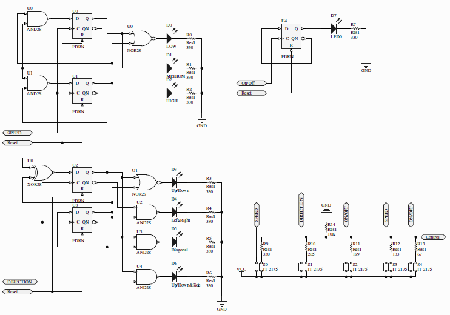
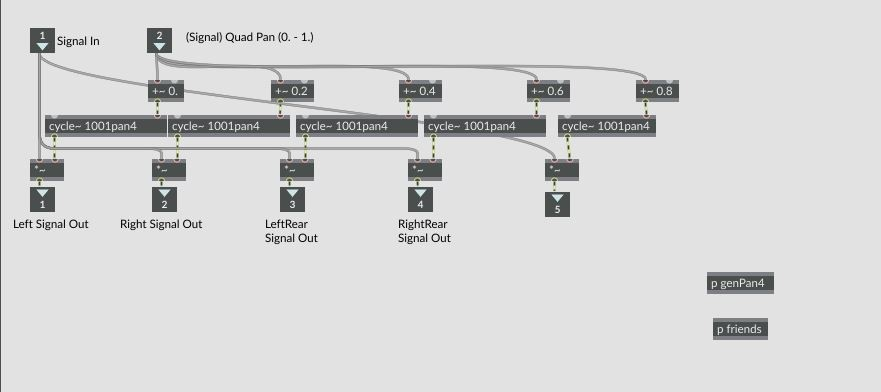

In third year at the University of Victoria, Electrical, Computer and Software Engineering students are required to complete a class that is intended to be the foundational research of their fourth year design project. For my research project, my group and I chose a project from supervisor Dr. Peter Driessen's set of pre-approved projects called "Spinning Sound Source". The objective of the project was to create a device that emulated the rotary sound of a Leslie Speaker using a dodecahedron speaker system.
In our original group meeting, before meeting with our supervisor, we worked through what we felt should be the general functionality of this speaker system. For our base case specifications, we decided to require the following:
After meeting with Dr. Driessen, we were aware of his own specifications. He wanted us to use Max to send multi-channel audio to the system via a RedNet Device. We made the decision to add this as an added feature to the final system as well as using Max via MIDI to control the speaker system. With that in mind, our group went about researching. We looked into analog and digital means of mixing between output channels, considered FPGA for system control, researched Max and RedNet, and considered if it would be feasible to spin the speaker system mechanically.

Figure 1. Footswitch Schematic
During this time, Dr. Driessen gave us a dodecahedron speaker that had been partially built by a previous group, so that it could be modified for our purposes. Unfortunately, the speaker system was missing so many parts and with no budget, being a research class, we opted to continue our research and work towards a proof of software concept using Max. To do this proof of concept, we borrowed a six channel half-dodecahedron speaker from Kirk McNally in the School of Music. With the half-dodecahedron, a six channel audio interface, and a computer running a custom Max Patch, we were able prove, from a software stand point, we could make a Spinning Sound Source.
Figure 2. Custom Max Patch
With this proof of concept and the research, my group wrote our report outlining what we were able to accomplish with the current implementation that used the custom Max patch with pre-built multi-speaker systems, and what a future implementation would entail. In the future, I plan on using this report and project to build the future implementation in my fourth year design class.

Figure 3. Custom Pan Object
Video 1. Guitar track
Video 2. Sine Tone
Video 3. Musical Track